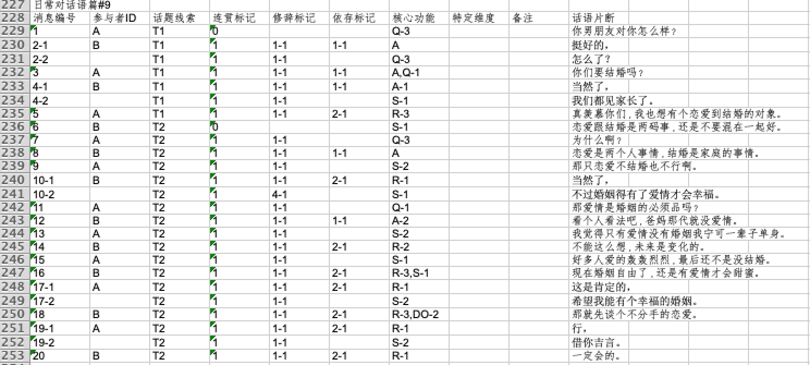
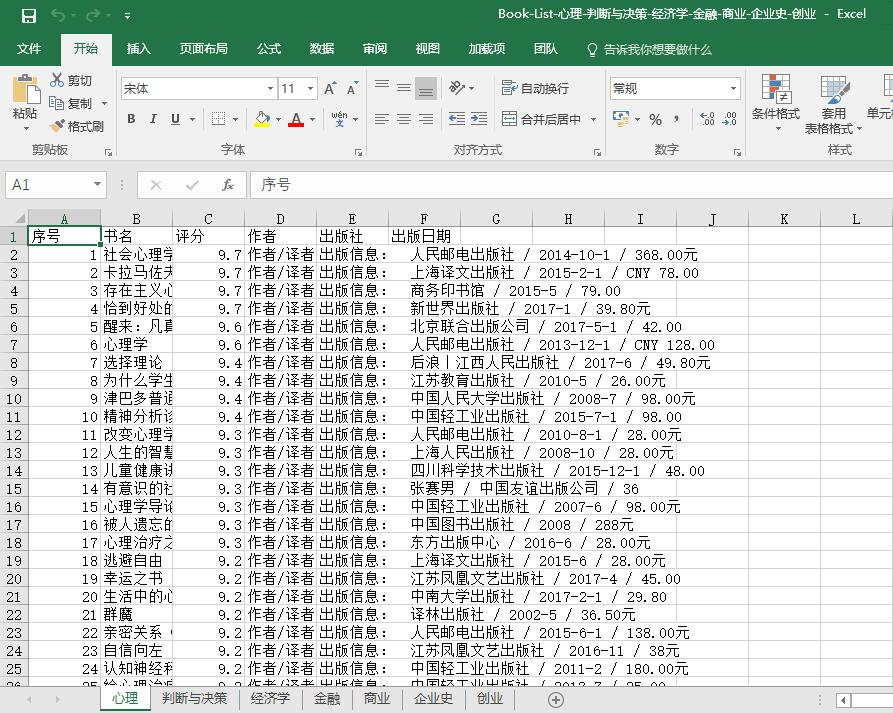
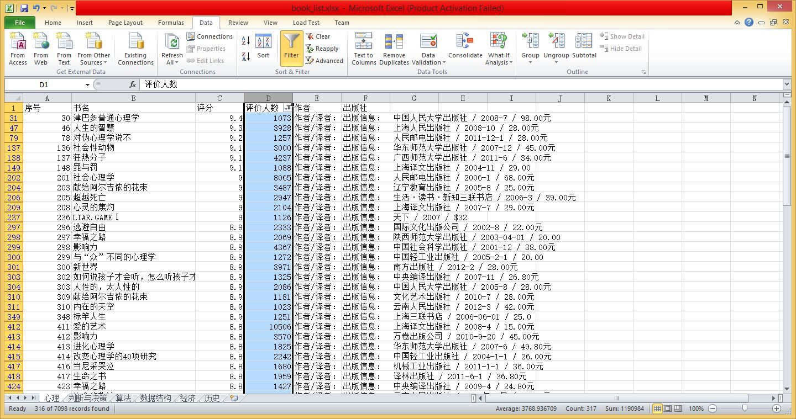
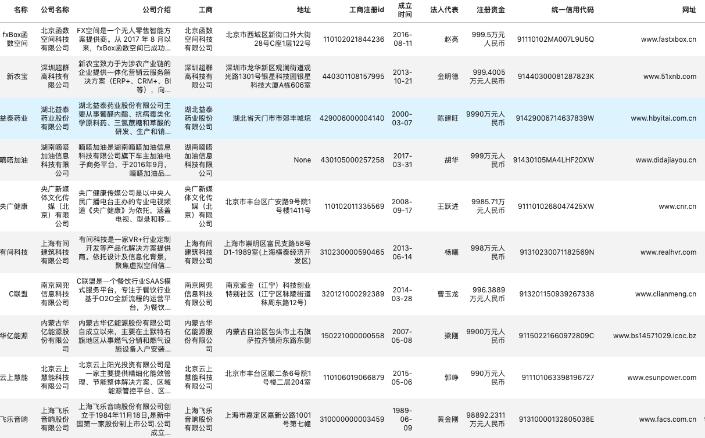

数据样例：
From: et@teal.csn.org (Eric H. Taylor)
Subject: Re: HELP_WITH_TRACKING_DEVICE
Summary: underground and underwater wireless methods
Keywords: Rogers, Tesla, Hertz, underground, underwater, wireless, radio
Nntp-Posting-Host: teal.csn.org
Organization: 4-L Laboratories
Expires: Fri, 30 Apr 1993 06:00:00 GMT
Lines: 36
In article <00969FBA.E640FF10@AESOP.RUTGERS.EDU> mcdonald@AESOP.RUTGERS.EDU writes:
>[...]
>There are a variety of water-proof housings I could use but the real meat
>of the problem is the electronics...hence this posting. What kind of
>transmission would be reliable underwater, in murky or even night-time ...
文件结构：
+---20news-bydate
| +---20news-bydate-test
| | +---comp.graphics
| | +---comp.os.ms-windows.misc
| | +---...
| +---20news-bydate-train
| | +---comp.graphics
| | +---comp.os.ms-windows.misc
| | +---...
数据样例：
Homelessness (or Houselessness as George Carlin stated) has been an issue for years but never a plan to help those on the street that were once considered human who did everything from going to school, work, or vote for the matter. Most people think of the homeless as just a lost cause while worrying about things such as racism, the war on Iraq, pressuring kids to succeed, technology, the elections, inflation, or worrying if they'll be next to end up on the streets.But what if you were given a bet to live on the streets for a month without the luxuries you once had from a home, the entertainment sets, a bathroom, pictures on the wall, a computer, and everything you once treasure to see what it's like to be homeless? That is Goddard Bolt's lesson. ...
文件结构：
+---aclImdb
| +---test
| | +---neg
| | +---pos
| | +---urls_neg.txt
| | +---urls_pos.txt
| +---train
| | +---.DS_Store
| | +---neg
| | +---pos
| | +---urls_neg.txt
| | +---urls_pos.txt
| +---imdb.vocab
| +---imdbEr.txt
| +---README
数据样例：
"2","Great CD","My lovely Pat has one of the GREAT voices of her generation. I have listened to this CD for YEARS and I still LOVE IT. When I'm in a good mood it makes me feel better. A bad mood just evaporates like sugar in the rain. This CD just oozes LIFE. Vocals are jusat STUUNNING and lyrics just kill. One of life's hidden gems. This is a desert isle CD in my book. Why she never made it big is just beyond me. Everytime I play this, no matter black, white, young, old, male, female EVERYBODY says one thing ""Who was that singing ?"""
The 3 columns are class index (1 or 2), review title and review text.
文件结构：
+---amazon_review_polarity_csv
| +---readme.txt
| +---test.csv
| +---train.csv
数据样例：
[
{
"url": "http://wyw.hwxnet.com/view/hwxe7hwx95hwxaa.html",
"explain":
{
"fān":
[
"①更替;替代;轮流。《北史·贺若弼传》：“请广陵顿兵一万,番代往来。”《左忠毅公逸事》：“漏鼓移则番代。”",
"②次;回。辛弃疾《摸鱼儿·置酒山亭》：“更能消几番风雨。”",
"③我国古代西南部民族的统称,泛指少数民族。"
]
},
"word": "番"
},
...
]
文件结构：
+---ancient_chinese
| +---ancient_chinese.json
数据样例：
{
"qid": "qid_1815059893214501395",
"category": "烦恼-恋爱",
"title": "请问深入骨髓地喜欢一个人怎么办我不能确定对方是不是喜欢我，我却想 ",
"desc": "我不能确定对方是不是喜欢我，我却想分分秒秒跟他在一起，有谁能告诉我如何能想他少一点",
"answer": "一定要告诉他你很喜欢他 很爱他!! 虽然不知道你和他现在的关系是什么！但如果真的觉得很喜欢就向他表白啊！！起码你努力过了！ 女生主动多少占一点优势的！！呵呵 只愿曾经拥有！ 到以后就算感情没现在这么强烈了也不会觉得遗憾啊~！ 与其每天那么痛苦的想他 恋他 还不如直接告诉他 ！ 不要怕回破坏你们现有的感情！因为如果不告诉他 你可能回后悔一辈子！！ "
}
文件结构：
+---baike2018qa
| +---baike_qa_train.json
| +---baike_qa_valid.json
数据样例：
mobi, epub, txt, pdf等格式
文件结构：
+---books-master
| +---Documents
| | +---上帝掷骰子吗——量子物理史话.mobi
| | +---反乌托邦三部曲：我们〔俄〕叶甫盖尼_扎米亚京.epub
| | +---...
| +---README.md
| +---SF
| | +---C·J·切瑞 - 卡桑德拉.txt
| | +---Hitchhiker's Guide to the Galaxy.pdf
| | +---J·K·罗琳 - 哈利·波特与火焰杯.txt
| | +---...
数据样例：
Yup, you heard the news right: If you head to Outback Steakhouse today, April 23, you can get a free Bloomin' Onion—thanks to race car driver Kevin Harvick
文件结构：
+---bytecup2018
| +---bytecup.corpus.train.0.zip
| +---bytecup.corpus.train.1.zip
| +---bytecup.corpus.train.2.zip
| +---bytecup.corpus.train.3.zip
| +---bytecup.corpus.train.4.zip
| +---bytecup.corpus.train.5.zip
| +---bytecup.corpus.train.6.zip
| +---bytecup.corpus.train.7.zip
| +---bytecup.corpus.train.8.zip
| +---bytecup.corpus.validation_set.zip
| +---bytecup_validation_sample.zip
数据样例：
19527 300
之 0.106363 -0.153333 -0.009010 0.162510 -0.009589 -0.120850 0.102605 0.003346 0.135963 0.024138 -0.041504 0.040381 0.013635 -0.072975 -0.085683 -0.113738 0.004788 -0.121901 0.057485 ...
文件结构：
+---CA8词向量
| +---PPMI
| | +---ppmi.baidubaike.bigram-char.bz2
| | +---ppmi.baidubaike.bigram.bz2
| | +---ppmi.baidubaike.char.bz2
| | +---ppmi.baidubaike.word.bz2
| | +---...
| +---word2vec
| | +---merge_sgns_bigram_char300.txt.bz2
| | +---sgns.baidubaike.bigram-char.bz2
| | +---sgns.financial.bigram-char.bz2
| | +---sgns.financial.bigram.bz2
| | +---sgns.financial.char.bz2
| | +---sgns.financial.word.bz2
| | +---...
数据样例：
偶爾 脆弱 偶爾 沉默
偶爾 失落 早已 不是 我能 承受 的
偶爾 失落 早已 不是 我能 承受 的
回憶 裏 心 狠狠 的 哭泣
回憶 裏 心 狠狠 的 哭泣
呼吸 亂 了 頻率 為 什麼 難放棄
呼吸 亂 了 頻率 為 什麼 難放棄
All files are composed of question-answer pairs, where odd lines are questions, even lines are answers.
文件结构：
+---chat_corpus-master
| +---lyrics_zh.txt.gz
| +---movie_subtitles_en.txt.gz
| +---open_subtitles.txt.gz
| +---README.md
| +---twitter_en.txt.gz
| +---twitter_en_big.txt.gz.partaa
| +---twitter_en_big.txt.gz.partab
数据样例：
中 B-ORG
共 I-ORG
中 I-ORG
央 I-ORG
content_id,content,subject,sentiment_value,sentiment_word
13149,因为森林人即将换代，这套系统没必要装在一款即将换代的车型上，因为肯定会影响价格。,价格,0,影响
2288,四驱价格貌似挺高的，高的可以看齐XC60了，看实车前脸有点违和感。不过大众的车应该不会差。,价格,-1,高
文件结构：
+---Chinese-NLP-Corpus-master
| +---Chinese-NLP-Corpus-master
| | +---Classification
| | | +---MSRA
| | | +---People's Daily
| | +---NER
| | | +---BDCI_AR_2018
| | +---README.md
数据样例：
{
"data": [
{
"title": "超级杯",
"paragraphs": [
{
"context": "“超级碗50”是一项美国足球比赛，旨在确定2015赛季美国国家足球联盟（NFL）的冠军。美国橄榄球联盟（AFC）冠军丹佛野马队以24比10击败美国国家足球联盟（NFC）冠军卡罗莱纳黑豹队，获得第三个超级杯冠军。比赛于2016年2月7日在加利福尼亚州圣克拉拉市旧金山湾区的利维体育场举行。由于这是第50届超级碗赛，联盟以各种黄金主题活动强调“黄金纪念日”，同时也暂时取消了用罗马数字命名每一场超级碗赛的传统（根据罗马数字命名的比赛将被称为“超级碗L”），这样的标志可以突出阿拉伯数字50。",
"qas": [
{
"answers": [
{
"answer_start": 58,
"text": "丹佛野马"
},
{
"answer_start": 58,
"text": "丹佛野马"
},
{
"answer_start": 58,
"text": "丹佛野马"
}
],
"question": "哪支NFL球队代表亚足联参加了50强赛？",
"id": "56be4db0acb8001400a502ec"
}
]
}
]
}
]
}
文件结构：
+---ChineseSquad-master
| +---README.md
| +---squad-zen
| | +---dev-zen-v1.0.json
| | +---train-zen-v1.0.json
| +---squad_1.1
| | +---dev-v1.1-zh.json
| | +---train-v1.1-zh.json
| +---squad_2.0
| | +---dev-v2.0-zh.json
| | +---train-v2.0-zh.json
数据样例：
{
"version": "v1.0",
"data": [
{
"paragraphs": [
{
"id": "DEV_0",
"context": "《战国无双3》（）是由光荣和ω-force开发的战国无双系列的正统第三续作。本作以三大故事为主轴，分别是以武田信玄等人为主的《关东三国志》，织田信长等人为主的《战国三杰》，石田三成等人为主的《关原的年轻武者》，丰富游戏内的剧情。此部份专门介绍角色，欲知武器情报、奥义字或擅长攻击类型等，请至战国无双系列1.由于乡里大辅先生因故去世，不得不寻找其他声优接手。从猛将传 and Z开始。2.战国无双 编年史的原创男女主角亦有专属声优。此模式是任天堂游戏谜之村雨城改编的新增模式。本作中共有20张战场地图（不含村雨城），后来发行的猛将传再新增3张战场地图。但游戏内战役数量繁多，部分地图会有兼用的状况，战役虚实则是以光荣发行的2本「战国无双3 人物真书」内容为主，以下是相关介绍。（注：前方加☆者为猛将传新增关卡及地图。）合并本篇和猛将传的内容，村雨城模式剔除，战国史模式可直接游玩。主打两大模式「战史演武」&「争霸演武」。系列作品外传作品",
"qas": [
{
"question": "《战国无双3》是由哪两个公司合作开发的？",
"id": "DEV_0_QUERY_0",
"answers": [
{
"text": "光荣和ω-force",
"answer_start": 11
},
{
"text": "光荣和ω-force",
"answer_start": 11
},
{
"text": "光荣和ω-force",
"answer_start": 11
}
]
},
...
文件结构：
+---cmrc2018-master
| +---baseline
| | +---cmrc2018_evaluate.py
| | +---modeling.py
| | +---optimization.py
| | +---README.md
| | +---run_cmrc2018_drcd_baseline.py
| | +---tokenization.py
| | +---__init__.py
| +---data
| | +---cmrc2018_dev.json
| | +---cmrc2018_evaluate.py
| | +---cmrc2018_train.json
| | +---cmrc2018_trial.json
| +---LICENCE
| +---qrcode.jpg
| +---README.md
| +---README_CN.md
| +---sponsor.png
| +---squad-style-data
| | +---cmrc2018_dev.json
| | +---cmrc2018_evaluate.py
| | +---cmrc2018_train.json
| | +---cmrc2018_trial.json
数据样例：
{
"data": [
{
"context_id": "DEV_0",
"answers": [
5,
8,
6,
7,
4,
3,
2,
1
],
"context": "这一年，动物王国里闹饥荒，死的死，逃的逃，森林里已经几乎见不到什么动物了。 “不行，[BLANK1]，诶……没想到我狐狸聪明一世，也会落到这个地步。恩，还是逃命要紧，这里再也不能待了。” 狐狸离开森林，走在一条大道上，[BLANK2]。“恩？往哪走才好呢？走哪条路呢？恩，我要好好想一想呢。千万可不要选错了。”[BLANK3]，正当狐狸犹豫不决时，它突然看见一只山鹰从对面的天空飞了过来。 “亲爱的朋友，你好啊！这条路……” “喂！我说朋友，[BLANK4]，前方有老虎！那家伙正饿的发慌呢！你可千万不能过去，还是走右边的这条路吧！”山鹰说完就离开了。 [BLANK5]。继续往前走，可是没走多远，它又碰到了狈，“狐狸兄弟，你可千万不能走，前面有一只狮子，真的，我没骗你。” “是么，你怎么知道，我看你是对我不怀好意吧？” “诶，朋友，[BLANK6]，我干嘛还骗你呀！” “哦！对了，我差点忘了，你不是和狼在一起么？怎么今天你们也分离了？” [BLANK7]，狐狸想来想去就继续往前走，“哼，这个愚蠢的狈，想打我的主意，没门，他想都不想，我聪明的狐狸是轻易能上当的么？” 正当狐狸得意的时候，[BLANK8]。“站住！狐狸，哈哈，你为什么现在才来啊，我饿的都快受不了了！” “啊…啊…啊……大王！是你啊，你好么？看样子你精神好及了！” “对，你说的很对，我见到你可高兴了！”",
"choices": [
"狮子说完就一个猛扑将狐狸咬住",
"忽然听到前面有一声大吼",
"狐狸以为狈和狼又在一起谋划想吃掉它",
"咱们都沦落到这步田地了",
"狐狸只好选择右边的路",
"再这样下去我也会饿死的",
"狐狸想了很长时间都没有拿定主意",
"左边的这条路千万不能走啊",
"它走着走着遇到了一个十字路口"
]
},
文件结构：
+---cmrc2019-master
| +---baseline
| | +---pytorch_pretrained_bert
| | +---README.md
| | +---run.sh
| | +---run_cmrc2019_baseline.py
| +---data
| | +---cmrc2019_dev.json
| | +---cmrc2019_qualify.json
| | +---cmrc2019_train.json
| | +---cmrc2019_trial.json
| +---eval
| | +---cmrc2019_evaluate.py
| +---LICENSE.txt
| +---qqgroup.png
| +---qrcode.jpg
| +---README.md
| +---sample_submission
| | +---trial_rand_submission.zip
| | +---trial_submission.zip
数据样例：
classified:
钢材 期货 首日 两 大 品种 成交 165 亿元
各 银行 信用卡 挂失 费 迥异 北京银行 收费 最高
7000亿 美元 救市 方案 将 成 期市 毒药
化 危 为 机 推动 我国 期市 创新 发展
大地 艺术大师 克里斯托 夫妇
王在荣 5月 10 日 实 盘操 作 指导
csv:
,label,text
体育,黄蜂vs湖人首发：科比带伤战保罗 加索尔救赎之战 新浪体育讯北京时间4月27日，NBA季后赛首轮洛杉矶湖人主场迎战新奥尔良黄蜂，此前的比赛中，双方战成2-2平，因此本场比赛对于两支球队来说都非常重要，赛前双方也公布了首发阵容：湖人队：费舍尔、科比、阿泰斯特、加索尔、拜纳姆黄蜂队：保罗、贝里内利、阿里扎、兰德里、奥卡福[新浪NBA官方微博][新浪NBA湖人新闻动态微博][新浪NBA专题][黄蜂vs湖人图文直播室](新浪体育)
文件结构：
+---cnews_classified
| +---.ipynb_checkpoints
| | +---cnews_bert_embedding-checkpoint.ipynb
| +---0tp_text.txt
| +---1tp_text.txt
| +---2tp_text.txt
| +---...
| +---9tp_text.txt
| +---cnews_bert_embedding.ipynb
| +---cnews_bert_embedding.pkl
| +---cnews_clean_cut_lines.txt
| +---labels.txt
| +---tmp.py
+---cnews_csv
| +---cnews.test.csv
| +---cnews.train.csv
| +---cnews.val.csv
数据样例：

文件结构：
+---DA_data
| +---.ipynb_checkpoints
| | +---DA数据构造topic边界数据-checkpoint.ipynb
| +---all_dialogs.dat
| +---DA数据构造topic边界数据.ipynb
| +---交通话题
| | +---交通话题-话题轮1-100-zxj1.xls
| | +---交通话题-话题轮101-200-zxj1.xls
| | +---...
| +---天气话题
| | +---天气话题-话题轮1-100-zxj1.xls
| | +---天气话题-话题轮101-200-zxj1.xls
| | +---...
| +---工作话题
| | +---工作话题-话题轮1-100-zxj1.xls
| | +---工作话题-话题轮101-200-zxj1.xls
| | +---...
| +---爱情话题
| | +---爱情话题-话题轮1-100-zxj.xls
| | +---爱情话题-话题轮101-200-zxj.xls
| | +---...
| +---饮食话题
| | +---饮食话题-话题轮1-100-zxj.xls
| | +---饮食话题-话题轮101-200-zxj.xls
| | +---...
数据样例：
spkr clue isContinu DA content topic
A T1 0 Q-1 你喜欢骑自行车出行吗？ 2
B T1 1 A-1 喜欢， 2
T1 1 S-1 我还骑车去旅行了。 2
A T1 2 R-1 我也喜欢， 2
T1 1 S-1 骑车方便又环保。 2
B T1 1 R-1 嗯， 2
T1 4 S-1 我平时上学也是骑车去的。 2
A T1 1 R-3 我上学是走着去，不远。 2
B T2 0 S-1 最近我们计划又去骑车旅行。 2
A T2 1 Q-3 这是要去哪儿？ 2
B T2 1 A 去黄土高原。 2
文件结构：
+---DAct
| +---dev.tsv
| +---raw_train.tsv
| +---sent_topic.csv
| +---test.tsv
| +---train.tsv
数据样例：
东京梦华录
孟元老
序
仆从先人宦游南北，崇宁癸未到京师，卜居于州西金梁桥西夹道之南。渐次长立，正当辇毂之下，太平日久，人物繁阜，垂髫之童，但习鼓舞，班白之老，不识干戈，时节相次，各有观赏。灯宵月夕，雪际花时，乞巧登高，教池游苑。
...
文件结构：
+---daizhigev20-master
| +---README.md
| +---_config.yml
| +---佛藏
| | +---乾隆藏
| | +---嘉兴藏
| | +---大藏经
| | +---续藏经
| | +---藏外
| +---使用须知.md
| +---儒藏
| | +---乐经
| | +---五经总义
| | +---修身治家
| | +---...
| +---医藏
| | +---一得集.txt
| | +---一瓢医案.txt
| | +---一草亭目科全书.txt
| | +---...
| +---史藏
| | +---传记
| | +---别史
| | +---史评
| | +---地理
数据样例：
ID,Movie_Name_EN,Movie_Name_CN,Crawl_Date,Number,Username,Date,Star,Comment,Like
1925478,Your Name,你的名字,2016-12-29,52333,二人,2016-09-27,5, “梦里相逢人不见，若知是梦何须醒。纵然梦里常幽会，怎比真如见一回。”所有的相遇都是久别重逢，所有>的念念不忘都会相遇。,0
1925487,Your Name,你的名字,2016-12-29,52342,小箱子~~,2016-12-10,5, 不管你在世界的哪里，我都会去见你；就算我忘记了你的名字，但我还是会一眼就认出你。,0
1925543,Your Name,你的名字,2016-12-29,52399,片桐哲平,2016-12-04,5, 看到Mitsuha和Takki不断呼唤对方的名字，和那句重要的人，不能忘记的人，不想忘记的人的时候，还>是有一种想哭的冲动。另外，新海诚和宫崎骏从来都不是一个风格的导演，更加没有比较的必要性，很多时候不是一定要足够宏大的世界观才能击中你的心，那些细小的感动，不也是另一种美丽吗？,0
文件结构：
Douban_Movie_Short_Comments.csv
数据样例：
1 射手 男 是不是 喜欢 成熟 的 女生 完了 我 恰恰 不是 这种 女生 啊 话说 我 认识 一个 27 的 射手 男 他 说 他 喜欢 御姐 范 的 那种 女生 成熟 的 我 擦 我 一辈子 也 成 不了 御姐 顶多 就是 个 萝莉 啊 你 可以 的 我 自己 觉得 没 希望 了 我 一辈子 都 做 不成 御姐 的 多 被 虐 几 次 别说 御姐 了 女王 都 可以 了 ╮ ╯ ▽ ╰ ╭
文件结构：
+---DoubanConversaionCorpus
| +---dev.txt
| +---test.txt
| +---train.txt
数据样例：

文件结构：
+---DouBanCrawls-master
| +---.idea
| | +---.name
| | +---DouBanCrawls.iml
| | +---misc.xml
| | +---modules.xml
| | +---vcs.xml
| +---DouBanMovie.py
| +---DouBanReading.py
| +---README.md
| +---Results_Book
| | +---Book-List-个人管理-时间管理-投资-文化-宗教.xlsx
| | +---Book-List-人工智能-神经网络-人机交互-通信-数据挖掘-云计算-物联网.xlsx
| | +---Book-List-名著-人文-历史-传记-哲学-诗歌-散文-港台.xlsx
| | +---...
数据样例：

文件结构：
+---DouBanSpider-master
| +---book_list-个人管理-时间管理-投资-文化-宗教.xlsx
| +---book_list-传记-哲学-编程-创业-理财-社会学-佛教.xlsx
| +---...
| +---doubanSpider.py
| +---README.md
| +---screenshots
| | +---douban.jpg
| | +---result.jpg
| | +---...
数据样例：
- version : 資料集版本
- data :
- title : : 文章標題
- id : : 文章編號
- paragraphs :
- id : : 文章編號_段落編號
- context : : 段落內容
- qas :
- question : : 問題內容
- id : : 文章編號_段落編號_問題編號
- answers :
- answer_start : text在文中位置
- id : : "1"表示為人工標註的答案，"2"以上為人工答題的答案
- text : : 答案內容
{
"version": "1.3",
"data": [
{
"title": "基督新教",
"id": "2128",
"paragraphs": [
{
"context": "基督新教與天主教均繼承普世教會歷史上許多傳統教義，如三位一體、聖經作為上帝的啟示、原罪、認罪、最後審判等等，但有別於天主教和東正教，新教在行政上沒有單一組織架構或領導，而且在教義上強調因信稱義、信徒皆祭司， 以聖經作為最高權威，...",
"id": "2128-2",
"qas": [
{
"id": "2128-2-1",
"question": "新教在教義上強調信徒皆祭司以及什麼樣的理念?",
"answers": [
{
"id": "1",
"text": "因信稱義",
"answer_start": 92
}
]
}
]
}
]
}
]
}
文件结构：
+---DRCD 台达繁体阅读理解数据集-master
| +---DRCD-master
| | +---DRCD_dev.json
| | +---DRCD_test.json
| | +---DRCD_training.json
| | +---README.md
数据样例：
{
"question_id": 186358,
"question_type": "YES_NO",
"question": "上海迪士尼可以带吃的进去吗",
"segmented_question": ["上海", "迪士尼", "可以", "带", "吃的", "进去", "吗"],
"documents": [
{
"paragraphs": ["text paragraph 1", "text paragraph 2"],
"segmented_paragraphs": [["tokens of paragraph1"], ["tokens of paragraph2"]],
"title": "上海迪士尼可以带吃的进去吗",
"segmented_title": ["上海", "迪士尼", "可以", "带", "吃的", "进去", "吗"],
"is_selected": True, # empty for test set
"most_related_para": 0, # empty for test set
},
# ...
],
"answers": [
"完全密封的可以，其它不可以。", # answer1
"可以的，不限制的。只要不是易燃易爆的危险物品，一般都可以带进去的。", # answer2
"罐装婴儿食品、包装完好的果汁、水等饮料及包装完好的食物都可以带进乐园，但游客自己在家制作的食品是不能入园，因为自制食品有一定的安全隐患。" # answer3
]
"answer_docs": [0],
"answer_spans": [[0, 15]]
"fake_answers": ["完全密封的可以，其他不可以。"],
"match_scores": [1.00],
"segmented_answers": [
["完全", "密封", "的", "可以", "，", "其它", "不可以", "。"],
["tokens for answer2"],
["tokens for answer3"],
"yesno_answers": [
"Depends", # corresponding to answer 1
"Yes", # corresponding to answer 2
"Depends" # corresponding to asnwer 3
]
}
文件结构：
+---dureader_preprocessed
| +---preprocessed
| | +---devset
| | +---evaluation_metric
| | +---License.docx
| | +---README.md
| | +---testset
| | +---trainset
数据样例：
微博：
微博来源,微博链接,发布时间,主旨,主旨字数,句群,句群句子数,句群字数,全文链接
西安晚报,https://weibo.com/1975995305/EneRqgaZt,2016-12-22 07:30:03,1983年12月22日 我国第一台亿次计算机“银河”研制成功,19,1983年12月22日，我国第一台每秒钟运算达1亿次以上的计算机——“银河”在长沙研制成功。“银河”巨型计算机系统是我国目前运算速度最快、...,3,123,
微博句子对：
0 695 696 鲁迅的长孙周令飞表示：“虽然家里有很多爷爷的书但是孩子想不想读 我们顺其自然从这点讲
0 697 698 我们顺其自然从这点讲 鲁迅的文章确实应该读但笔者以为
0 699 700 鲁迅的文章确实应该读但笔者以为 不等于要让孩子那么早读
1 701 702 不等于要让孩子那么早读 6月15日中午1点左右北京朝阳区盛华检测场内
0 703 704 6月15日中午1点左右北京朝阳区盛华检测场内 一辆网传价值2600多万元的科尼塞格‘幽灵跑车’“冒热烟”并发出“砰”的一声
百度百科词条：
词条名称,词条概述,段落标题,主旨(词条名称+段落标题),主旨字数,句群,句群句子数,句群字数,词条标签,词条url
亚健康,我国很多学者都提出过亚健康的评价方法或诊断标准，...,6,219,科学百科疾病症状分类,http://baike.baidu.com/view/14.htm
文件结构：
+---duzhen
| +---duzhen
| | +---.ipynb_checkpoints
| | +---1v1_weibo_dev.tsv
| | +---1v1_weibo_train.tsv
| | +---20180414-相关问题-[02-ZQ].docx
| | +---20180419-文档摘要型微博数据抓取初步方案-[03-ZDZ].docx
| | +---20180419-文档摘要型微博数据抓取初步方案-[04-ZQ].docx
| | +---20180522-数据说明-[05-ZDZ].docx
| | +---20180522-采集样本-[05-ZDZ].xlsx
| | +---20180703-百度百科数据爬取方案-ZDZ.docx
| | +---20180805-形式过滤后的微博数据-[ZDZ]-New.csv
| | +---20180805-形式过滤后的微博数据-[ZDZ]-New.xlsx
| | +---20180805-形式过滤后的微博数据-[ZDZ].csv
| | +---20180805-微博数据形式过滤-[ZDZ].docx
| | +---20180806-形式过滤后的微博数据-[ZDZ]-New.csv
| | +---20180806-形式过滤后的百科数据-[ZDZ]-New.csv
| | +---20180806-形式过滤后的百科数据-[ZDZ].csv
| | +---20180806-百科数据形式过滤-[ZDZ].docx
| | +---BaZhuaYu.zip
| | +---Re_提取数据质量评估方案.zip
| | +---train.tsv.bak2
| | +---weibo_index_sent.tsv
| | +---weibo_raw_sentence_pairs.txt
| | +---weibo_test.txt
| | +---主旨概括数据提取.zip
| | +---微博数据-初筛选
| | +---微博模拟数据构造.ipynb
| | +---爬虫工具及文档
| | +---百科数据-初筛选
| | +---相关问题.docx
| | +---词嵌入向量
数据样例：
word,phonetic,definition,translation,pos,collins,oxford,tag,bnc,frq,exchange,detail,audio
-aster,'æstə,," [用以构成生物学属名]表示“星”, “星状结构”：diaster\nsuf. 表示“劣等的”,“次等的”,“伪的”,“无价值的”：criticaster, poetaster",,,,,0,0,,,
keys:
| 字段 | 解释 |
| ----------- | ---------------------------------------------------------- |
| word | 单词名称 |
| phonetic | 音标，以英语英标为主 |
| definition | 单词释义（英文），每行一个释义 |
| translation | 单词释义（中文），每行一个释义 |
| pos | 词语位置，用 "/" 分割不同位置 |
| collins | 柯林斯星级 |
| oxford | 是否是牛津三千核心词汇 |
| tag | 字符串标签：zk/中考，gk/高考，cet4/四级 等等标签，空格分割 |
| bnc | 英国国家语料库词频顺序 |
| frq | 当代语料库词频顺序 |
| exchange | 时态复数等变换，使用 "/" 分割不同项目，见后面表格 |
| detail | json 扩展信息，字典形式保存例句（待添加） |
| audio | 读音音频 url （待添加） |
文件结构：
+---ECDICT-中英双解词典数据库master
| +---ECDICT-master
| | +---dictutils.py
| | +---ecdict.csv
| | +---ecdict.mini.csv
| | +---lemma.en.txt
| | +---LICENSE
| | +---linguist.py
| | +---README.md
| | +---resemble.txt
| | +---stardict.7z
| | +---stardict.py
| | +---wordroot.txt
数据样例：
除了睡觉之外
只要张开眼睛就会看到小允 即使小允在我面前
或者小允不在我面前
我的眼里始终都有小允 我了解你的心情
I'm alway with Lei except when I'm asleep,
Whether Lei is with me or not,
To my eyes that's all I could see.
I told you, I know how you feel.
文件结构：
+---OpenSubtitles_EN_ZH
| +---en-zh_cn.txt
| | +---OpenSubtitles.en-zh_cn.en
| | +---OpenSubtitles.en-zh_cn.ids
| | +---OpenSubtitles.en-zh_cn.zh_cn
| | +---README
| +---en-zh_cn.xml
| | +---en-zh_cn.xml.gz.tmp
数据样例：

文件结构：
+---FinancialDatasets-master
| +---data
| | +---SmoothNLP专栏资讯数据集样本10k.xlsx
| | +---SmoothNLP工商数据集样本10K.xlsx
| | +---SmoothNLP金融新闻数据集样本20k.xlsx
| +---demo
| | +---专栏资讯demo.png
| | +---工商数据demo.png
| | +---金融新闻demo.png
| +---README.md
数据集名称：FinancialDatasets-master
数据类型：工商数据，金融新闻
用途：* Embedding (Word2Vec, Bert, 等) * 实体识别 * 无监督聚类: 基于企业描述信息, 进行竞品聚类 * 企业行业分类
镜像：Link
数据样例：
__newId__12
文件结构：
+---glue_data
| +---CoLA
| | +---dev.tsv
| | +---original
| | +---test.tsv
| | +---train.tsv
| +---dev-v1.1.json
| +---diagnostic
| | +---diagnostic.tsv
| +---evaluate-v1.1.py
| +---glue_data.zip
| +---MNLI
| | +---dev_matched.tsv
| | +---dev_mismatched.tsv
| | +---original
| | +---README.txt
| | +---test_matched.tsv
| | +---test_mismatched.tsv
| | +---train.tsv
| +---MRPC
| | +---dev.tsv
| | +---dev_ids.tsv
| | +---msr_paraphrase_test.txt
| | +---msr_paraphrase_train.txt
| | +---test.tsv
| | +---train.tsv
| +---QNLI
| | +---dev.tsv
| | +---test.tsv
| | +---train.tsv
| +---QQP
| | +---dev.tsv
| | +---original
| | +---test.tsv
| | +---train.tsv
| +---RTE
| | +---dev.tsv
| | +---test.tsv
| | +---train.tsv
| +---SNLI
| | +---dev.tsv
| | +---original
| | +---README.txt
| | +---test.tsv
| | +---train.tsv
| +---SST-2
| | +---dev.tsv
| | +---original
| | +---test.tsv
| | +---train.tsv
| +---STS-B
| | +---dev.tsv
| | +---LICENSE.txt
| | +---original
| | +---readme.txt
| | +---test.tsv
| | +---train.tsv
| +---SUB
| | +---dev.tsv
| | +---test.tsv
| | +---train.tsv
| | +---train.tsv.bak
| +---train-v1.1.json
| +---WNLI
| | +---dev.tsv
| | +---test.tsv
| | +---train.tsv
数据样例：
3000000 300
0.0011291504 -0.00089645386 0.00031852722 0.0015335083 ...
in 0.0703125 0.08691406 0.087890625 0.0625 0.06933594 -0.10888672 ...
文件结构：
+---GoogleNews-vectors-negative300
| +---google-vectors.txt
| +---GoogleNews-vectors-negative300.bin
| +---GoogleNews-vectors-negative300.txt
数据样例：
This folder contains five files:
1. post.index contains post_id with its contents
2. response.index contains response_id with its contents
3. original.pair original post-response pairs
4. labeled.pair labeled post-response pairs
5. Readme readme of this dataset
"post.index" and "response.index" save the content of the posts and responses.
1. Format for post.index
post_id##word1 word2 word3..
For example:
0##祝 各位 朋友 2012 年 万事如意 ！
2. Format for response.index
response_id##word1 word2 word3..
For example:
0##祝 汤 教授 新年 快乐
NOTE that the content is given after Chinese word segmentation.
"original.pair" and "labeled.pair" save the original post-response pairs and the labeled post-response pairs, all saved in their IDs.
3. Format for original.pair
post_id:response_id1,response_id2,...
where post_id and response_idx are respectively the post and response index. For example:
0:0,1,2,3,4,5,6,7,10,12,13,24,25,29,32,36,359,455,640,679
4. Format for labeled.pair
label,post_id,response_id
where label=2, if the pair is considered appropriate, and 1 otherwise. For example:
...
1,10270,272666
1,10270,126721
2,10270,126728
1,10270,126754
...
文件结构：
+---huawei_corpus
| +---labeled.pair
| +---original.pair
| +---post.index
| +---Readme.txt
| +---response.index
数据样例：
color,director_name,num_critic_for_reviews,duration,director_facebook_likes,actor_3_facebook_likes,actor_2_name,actor_1_facebook_likes,gross,genres,actor_1_name,movie_title,num_voted_users,cast_total_facebook_likes,actor_3_name,facenumber_in_poster,plot_keywords,movie_imdb_link,num_user_for_reviews,language,country,content_rating,budget,title_year,actor_2_facebook_likes,imdb_score,aspect_ratio,movie_facebook_likes
Color,Gore Verbinski,302,169,563,1000,Orlando Bloom,40000,309404152,Action|Adventure|Fantasy,Johnny Depp,Pirates of the Caribbean: At World's End ,471220,48350,Jack Davenport,0,goddess|marriage ceremony|marriage proposal|pirate|singapore,http://www.imdb.com/title/tt0449088/?ref_=fn_tt_tt_1,1238,English,USA,PG-13,300000000,2007,5000,7.1,2.35,0
文件结构：
movie_metadata.csv


数据样例：
[
[
"你 去 那儿 竟然 不喊 我 生气 了 ， 快点 给 我 道歉",
"道歉 ！ ！ 再有 时间 找 你 去",
"领个 搓衣板 去 吧"
],
[
"我用 SEED.24 小时 签到 一次 可以 用 4 小时 ， 对于 我 这种 每天晚上 逛 一下 的 感觉 不错",
"SEED 早上 刚 被 禁用 还有 一个月 的 VIP 路线 呢 禁 了 之后 才 买 的 另 一个 买 了 一年 结果 用 了 一 下午 就 挂 了 现在 用 了 个 极速网 速差 的 很",
"心疼 你"
],
[
"咬咬牙 这回 要 全入 了 ！",
"干完 这 一票 我 的 会员 等级 就要 升 了 ！",
"升 了 继续"
],
文件结构：
+---LCCC Chinese Conversation Corpus
| +---LCCC-base-split
| | +---LCCC-base_test.json
| | +---LCCC-base_train.json
| | +---LCCC-base_valid.json
| +---LCCC-large
| | +---LCCD.json


数据样例：
E
M “/想要/成为/一名/伟大/的/战士/，/就/必须/从小/刻苦/锻炼/。/”/
E
M “/你们/都/是/普通人/，/不/可能/像/那些/大/贵族/一样/有/厉害/的/斗/气密/典/修炼/，/想要/出人头地/，/想要/将来/不/被/人/瞧不起/，/你们/就/必须/按照/最/古老/、/最/简单/、/最/基础/的/方法/锻炼/，/锻炼身体/、/打熬/力气/，/明白/没有/！/”/
M “/明白/。/”/
M “/很/好/。/”/
E
M “/早晨/，/朝阳/升起/，/万物/生机勃勃/。/此刻/正是/吸收/天地/的/精华/，/提高/我们/身体/潜力/的/最好/时候/，/老规矩/，/双腿/分开/与/肩同/宽/，/双膝/微微/弯曲/，/双手/收/於/腰部/位置/，/成/‘/蕴气式/’/，/做/蕴气式/的/时候/，/要紧/记/‘/集中/注意力/，/保持/心中/平静/，/呼吸/要/自然/’/。/”/
E
M “/记住/，/集中/注意力/、/心中/平静/、/呼吸/自然/！/”/
E
文件结构：
+---NovelConversationCorpus-master
| +---main.py
| +---README.md
| +---out.txt
| +---Output
| | +---001.txt
| | +---002.txt
......
数据集名称：Novel_Corpus
数据类型：中文对话文本，挑选了120部中文网络小说，提取了小说中的对话，然后进行分词，分段后的数据，用来训练对话机器人
用途：对话机器人，主题建模，主题分割，语言模型
镜像：Link
数据样例：
OpenSubtitles.en-zh_cn.en:
Ah, this is greasy. I want to eat kimchee.
Is Chae Yoon's coordinator in here?
Excuse me, aren't you Chae Yoon's coordinator?
Yes. Me?
-Chae Yoon is done singing.
This lady right next to me... everyone knows who she is right?
OpenSubtitles.en-zh_cn.zh_cn:
好想要吃泡菜
崔允的造型师在吗
请问一下 你是不是崔允的造型师
我吗
崔允已经唱完了
这位小姐是谁 我想大家都知道吧
OpenSubtitles.en-zh_cn.ids:
en/0/1218838/4681542.xml.gz zh_cn/0/1218838/5937424.xml.gz 1 2 2
en/0/1218838/4681542.xml.gz zh_cn/0/1218838/5937424.xml.gz 3 13
en/0/1218838/4681542.xml.gz zh_cn/0/1218838/5937424.xml.gz 4 14 15
en/0/1218838/4681542.xml.gz zh_cn/0/1218838/5937424.xml.gz 5 6 16
en/0/1218838/4681542.xml.gz zh_cn/0/1218838/5937424.xml.gz 7 17
en/0/1218838/4681542.xml.gz zh_cn/0/1218838/5937424.xml.gz 8 19 20
en/0/1218838/4681542.xml.gz zh_cn/0/1218838/5937424.xml.gz 9 22 23 24
en-zh_cn.xml.gz.tmp:
文件结构：
+---en-zh_cn.txt
| +---OpenSubtitles.en-zh_cn.en
| +---OpenSubtitles.en-zh_cn.ids
| +---OpenSubtitles.en-zh_cn.zh_cn
| +---README
+---en-zh_cn.xml
| +---en-zh_cn.xml.gz.tmp
数据样例：
E
M 呵呵
M 是王若猫的。
E
M 不是
M 那是什么？
E
M 怎么了
M 我很难过，安慰我~
E
M 开心点哈,一切都会好起来
M 嗯 会的
E
M 我还喜欢她,怎么办
M 我帮你告诉她？发短信还是打电话？
E
文件结构：
+---Chinese_chatbot_corpus
| +---chatterbot-1k
| | +---chinese
| +---douban-multiturn-100w
| | +---dev.txt
| | +---test.txt
| | +---train.txt
| +---egret-qa-useless
| | +---config
| | +---egret_wenda_conversations.txt
| | +---egret_wenda_lines.txt
| | +---LICENSE
| | +---package.json
| | +---processer.js
| | +---raw
| | +---README.md
| +---ptt-42w
| | +---Gossiping-QA-Dataset.txt
| +---qingyun-11w
| | +---12万对话语料青云库.csv
| +---sms-useless
| | +---smsCorpus_zh_sql_2015.03.09
| | +---smsCorpus_zh_xml_2015.03.09
| +---subtitle-useless
| | +---dgk_shooter_min.conv
| | +---temp.txt
| +---tieba-305w
| | +---tieba.dialogues
| +---weibo-400w
| | +---stc_weibo_train_post
| | +---stc_weibo_train_response
| +---xiaohuangji-40w
| | +---xiaohuangji50w_nofenci.conv
数据样例：
cats.txt
test/14826 trade
test/14828 grain
test/14829 nat-gas crude
test/14832 rubber tin sugar corn rice grain trade
test/14833 palm-oil veg-oil
test/14839 ship
train/1.txt
BAHIA COCOA REVIEW
Showers continued throughout the week in
the Bahia cocoa zone, alleviating the drought since early
January and improving prospects for the coming temporao,
although normal humidity levels have not been restored,
Comissaria Smith said in its weekly review.
The dry period means the temporao will be late this year.
文件结构：
+---reuters
| +---cats.txt
| +---README
| +---reuters
| +---stopwords
| +---test
| +---training
数据样例：
大易象数钩隐图
经名：大易象数钧隐图。元张理撰。底本未题撰人。三卷。底本出处：《正统道藏》洞真部灵图类。参校版本：文渊阁四库全书本经部易类（简称四库本）。
目录
卷上
太极贯一之图
易有太极图
旧有此图
太极函三自然奇耦之图
文件结构：
+---scripta-sinica-master
| +---01易藏-0195部
| | +---01易经-49部
| | +---02术数-146部
| +---02儒藏-0370部
| | +---01诗经-17部
| | +---02尚书-7部
| | +---03礼经-12部
| | +---04乐经-1部
| | +---05春秋-13部
| | +---06小学-13部
| | +---07四书-27部
| | +---08五经总义-7部
| | +---09孝经-4部
| | +---10语录-136部
| | +---11启蒙蒙学-75部
| | +---12修身治家-58部
| +---03道藏-1689部
| | +---01正统道藏洞神部-369部
| | +---02正统道藏洞玄部-311部
| | +---03正统道藏洞真部-326部
| | +---04正统道藏太平部-65部
| | +---05正统道藏太清部-24部
| | +---06正统道藏太玄部-113部
| | +---07正统道藏正一部-237部
| | +---08正统道藏续道藏-58部
| | +---09藏外-186种
| +---04佛藏-5159部
| | +---01大藏经-2432部
| | +---02续藏经-710部
| | +---03乾隆藏-1591部
| | +---04嘉兴藏-284部
| | +---05藏外-116种
| +---05子藏-1155部
| | +---01农家-25部
| | +---02兵家-53部
| | +---03法家-7部
| | +---04诸子-50部
| | +---05算法-7部
| | +---06杂论-270部
| | +---07笔记-415部
| | +---08类书-0328部
| +---06史藏-1725部
| | +---01正史-34部
| | +---02编年-21部
| | +---03别史-100部
数据样例：
The files contain one message per line. Each line is composed by two columns: one with label (ham or spam) and other with the raw text. Here are some examples:
ham What you doing?how are you?
ham Ok lar... Joking wif u oni...
ham dun say so early hor... U c already then say...
ham MY NO. IN LUTON 0125698789 RING ME IF UR AROUND! H*
ham Siva is in hostel aha:-.
ham Cos i was out shopping wif darren jus now n i called him 2 ask wat present he wan lor. Then he started guessing who i was wif n he finally guessed darren lor.
spam FreeMsg: Txt: CALL to No: 86888 & claim your reward of 3 hours talk time to use from your phone now! ubscribe6GBP/ mnth inc 3hrs 16 stop?txtStop
spam Sunshine Quiz! Win a super Sony DVD recorder if you canname the capital of Australia? Text MQUIZ to 82277. B
spam URGENT! Your Mobile No 07808726822 was awarded a L2,000 Bonus Caller Prize on 02/09/03! This is our 2nd attempt to contact YOU! Call 0871-872-9758 BOX95QU
Note: messages are not chronologically sorted.
文件结构：
+---smsspamcollection
| +---readme
| +---SMSSpamCollection
数据样例：
{
"188977": {
"playlist_lst": [
{
"pid": 1119,
"title": "【80后90后KTV收藏】700首流行经典老歌怀旧",
"link": "2451836751",
"tags": [
"流行",
"怀旧",
"经典"
]
}
],
"song_name": "你最珍贵",
"author": "高慧君",
"lyric": "[00:00.000] 作曲 : 凌伟文\n[00:01.000] 作词 : 林明阳/十方\n[00:36.99](男) 明年这个时间\n[00:41.99]约在这个地点\n[00:46.99](女) 记得带著玫瑰\n[00:50.99]打上领带系上思念\n[00:56.99](男) 动情时刻最美\n[01:01.99]真心的给不累\n[01:06.99](女) 太多的爱怕醉\n[01:10.99]没人疼爱 再美的人也会憔悴\n[01:21.99](男) 我会送你红色玫瑰(女) 你知道我爱流泪\n[01:26.99]你别拿一生眼泪相对\n[01:31.99](男)(女) 未来的日子有你才美 梦才会真一点\n[01:41.99](女) 我学著在你爱里沉醉 (男) 我不撤退\n[01:46.99]你守护著我穿过黑夜\n[01:51.99](合) 我愿意这条情路相守相随\n[01:58.99]你最珍贵\n[02:05.99](music)\n[02:28.100](男) 动情时刻最美\n[02:33.100]真心的给不累\n[02:38.100](女) 太多的爱怕醉\n[02:42.100]没人疼爱 再美的人也会憔悴\n[02:53.100](男) 我会送你红色玫瑰(女) 你知道我爱流泪\n[02:58.100]你别拿一生眼泪相对\n[03:03.100](男)(女) 未来的日子有你才美 梦才会真一点\n[03:13.100](女) 我学著在你爱里沉醉 (男) 我不撤退\n[03:18.100]你守护著我穿过黑夜\n[03:23.100](合) 我愿意这条情路相守相随\n[03:30.100]你最珍贵\n[03:36.100](男) 我会送你红色玫瑰(女) 你知道我爱流泪\n[03:41.100]你别拿一生眼泪相对\n[03:46.100](男)(女) 未来的日子有你才美 梦才会真一点\n[03:56.100](女) 我学著在你爱里沉醉 (男) 我不撤退\n[04:01.100]你守护著我穿过黑夜\n[04:06.100](合) 我愿意这条情路相守相随\n[04:13.100]你最珍贵\n",
"comments": [
{
"cid": 57479,
"txt": "因为张继科来的[色]",
"author": "在下王宅宅",
"liked": 61
},
{
"cid": 57478,
"txt": "想起一位很好的朋友…记得我俩曾想过把自己的经历见闻合写成一本小说。这首歌是她为自己挑选的主题曲…如今，她正在努力书写着自己的梦想，我真的替她感到开心！能去追求，不论过程多么艰辛，前面已是一条美丽彩虹…而我期待着某一天漂洋过海，去见证她为自己争取的幸福～ ",
"author": "CeciChen1203",
"liked": 167
},
文件结构：
+---163_song_records
| +---song_records.json
| +---song_records.pkl
数据样例：
train_texts.txt
Wall St. Bears Claw Back Into the Black (Reuters) Reuters - Short-sellers Wall Street's dwindling\band of ultra-cynics are seeing green again.
train_labels.txt
Business
Readme
The AG's news topic classification dataset is constructed by choosing 4 largest classes from the original corpus. Each class contains 30,000 training samples and 1,900 testing samples. The total number of training samples is 120,000 and testing 7,600.
文件结构：
+---AgNews
| +---classes.txt
| +---readme.txt
| +---test_labels.txt
| +---test_texts.txt
| +---train_labels.txt
| +---train_texts.txt
| +---vocabs.txt
数据样例：
train.txt
三联书店建起书香巷 4
宇航员尿液堵塞国际空间站水循环系统 4
研究发现开车技术差或与基因相关 6
皇马输球替补席闹丑闻 队副女球迷公然调情(视频) 7
北京建工与市政府再度合作推出郭庄子限价房 1
组图：李欣汝素颜出镜拍低碳环保大片 9
class.txt
finance
realty
stocks
education
science
society
politic
文件结构：
+---THUCNews-title
| +---class.txt
| +---dev.txt
| +---test.txt
| +---train.txt
数据样例：
6551700932705387022_!_101_!_news_culture_!_京城最值得你来场文化之旅的博物馆_!_保利集团,马未都,中国科学技术馆,博物馆,新中国
6552368441838272771_!_101_!_news_culture_!_发酵床的垫料种类有哪些？哪种更好？_!_
6552407965343678723_!_101_!_news_culture_!_上联：黄山黄河黄皮肤黄土高原。怎么对下联？_!_
6552332417753940238_!_101_!_news_culture_!_林徽因什么理由拒绝了徐志摩而选择梁思成为终身伴侣？_!_
6552475601595269390_!_101_!_news_culture_!_黄杨木是什么树？_!_
6552387648126714125_!_101_!_news_culture_!_上联：草根登上星光道，怎么对下联？_!_
6552271725814350087_!_101_!_news_culture_!_什么是超写实绘画？_!_
文件结构：
+---Toutial-text-classfication
| +---get_data.py
| +---readme.md
| +---toutiao_cat_data.txt
数据集名称：Toutial-text-classification
数据类型：今日头条短文本，新闻类，15分类，有类别标签
用途：文本分类，主题建模
数据样例：
{"english": "For greater sharpness, but with a slight increase in graininess, you can use a 1:1 dilution of this developer.", "chinese": "为了更好的锐度，但是附带的会多一些颗粒度，可以使用这个显影剂的1：1稀释液。"}
{"english": "He calls the Green Book, his book of teachings, “the new gospel.", "chinese": "他还把宣扬自己思想的所谓《绿皮书》称作“新福音书”。"}
{"english": "And the light breeze moves me to caress her long ear", "chinese": "微风推着我去爱抚它的长耳朵"}
{"english": "They have the blood of martyrs is the White to flow …", "chinese": "它们的先烈们的鲜血是白流了…"}
{"english": "Finally, the Lakers head to the Motor City to take on a Pistons team that currently owns the Eastern Conference's second best record (1/31). L.", "chinese": "最后，在1月31日，湖人将前往汽车城底特律挑战活塞队，活塞近来在东部排名第二。"}
文件结构：
+---translation2019_en-zh
| +---translation2019_en-zh_train.json
| +---translation2019_en-zh_valid.json
数据样例：
subtitles
1
00:00:02,480 --> 00:00:06,440
老友记
第一季第一集
2
00:00:06,980 --> 00:00:12,160
没人告诉你生活会是这样
So no one told you life was gonna be this way
3
00:00:12,160 --> 00:00:14,280
你滑稽的工作 你的差劲
your jobs a joke, you're broke,
文件结构：
+---TV4Dialog
| +---README.md
| +---ts4
| | +---README.md
| | +---ts4
数据样例：
{"Q_ANN_VAL_001098": {"question": "\u5927\u674e\u675c\u662f\u674e\u767d\u675c\u752b,\u5c0f\u674e\u675c\u662f\u674e\u5546\u9690\u548c\u8c01?", "evidences": {"Q_ANN_VAL_001098#00"...
文件结构：
+---WebQA.v1.0
| +---dev_webqa.json
| +---me_test.ann.json
| +---me_test.ir.json
| +---me_train.json
| +---me_validation.ann.json
| +---me_validation.ir.json
| +---readme.txt
| +---test_webqa.json
| +---train_law_ydlj.json
| +---train_webqa.json
| +---WebQA_preprocess.ipynb
数据样例：
# TSV format
weiboId attitudes_count bmiddle_pic comments_count created_at favorited geo id idstr in_reply_to_screen_name in_reply_to_status_id in_reply_to_user_id mid mlevel original_pic pic_urls reposts_count source text thumbnail_pic truncated uid visible retweeted_status_id gatherTime
2795 3 1 Fri Mar 14 07:39:21 +0800 2014 3687927769123815 3687927769123815 3687927769123815 0 2 iPhone客户端 回复@南极JaronNan:I have other shows so I cannot continue on the #saythewordstour# . But @曲婉婷Wanting a tour lasts until the end of March in North America ! Go see it !//@南极JaronNan:So that means your show has come to an end so far? 5060511691 00 3687864854744873 1397717462203
文件结构：
| +---weibo.txt
数据样例：
raw:
{"id": "433426", "url": "https://zh.wikipedia.org/wiki?curid=433426", "title": "世界人口", "text": "世界人口\n\n在人口统计学中，世界人口是目前全球的总人数。世界人口已在2017年4月24日16时21分（UTC）达到75亿人。联合国估计，在2100年将进一步增加到112亿。...
processed:
【数学】
欧几里得，西元前三世纪的古希腊数学家，现在被认为是几何之父，此画为拉斐尔的作品《雅典学院》。
数学，是利用符号语言研究数量、结构、变化以及空间等概念的一门学科，从某种角度看属于形式科学的一种。数学透过抽象化和逻辑推理的使用，由计数、计算、量度和对物体形状及运动的观察而产生。数学家们拓展这些概念，为了公式化新的猜想以及从选定的公理及定义中建立起严谨推导出的定理。
文件结构：
+---wiki_zh
| +---process_wiki_corpus.py
| +---zhwiki-latest-pages-articles.xml.bz2
| +---wiki_zh_2019
| | +---wiki_zh
| | | +---AA
| | | +---AB
| | | +---AC
| | | +---AD
| | | +---AE
| | | +---AF
| | | +---AG
| | | +---AH
| | | +---AI
| | | +---AJ
| | | +---AK
| | | +---AL
| | | +---AM
数据样例：
movies
"MOVIE_ID","NAME","ALIAS","ACTORS","COVER","DIRECTORS","DOUBAN_SCORE","DOUBAN_VOTES","GENRES","IMDB_ID","LANGUAGES","MINS","OFFICIAL_SITE","REGIONS","RELEASE_DATE","SLUG","STORYLINE","TAGS","YEAR","ACTOR_IDS","DIRECTOR_IDS"
"26670818","情定河州","情定临夏天使然","王博/吴佳尼/王姬/高丽雯/郭力行/尹哲/沈丹萍/罗中旭/臧金生/罗刚/居文沛/阎青妤","","尹哲","0.0","0","剧情/爱情","","汉语普通话","0","","中国大陆","","RmNQQeyzb","电影《情定临夏天使然》讲述临夏新一代青年人发奋图强、借助国家一带一路战略励志创业的故事。","甘肃/临夏/伊斯兰/中国/2016/中国大陆/烂片/宣传伊斯兰教的电影","2049","王博:|吴佳尼:1313262|王姬:1275275|高丽雯:1325661|郭力行:1354456|尹哲:1326188|沈丹萍:1009141|罗中旭:1328354|臧金生:1045901|罗刚:1315029|居文沛:1275019|阎青妤:1317117","尹哲:1326188"
"25815002","我不是李小龙","","谷尚蔚/吴孟达/曾志伟/杜海涛","","洪金宝","0.0","0","动作/爱情","","汉语普通话","0","","中国大陆","","EZnVfiNYf","桀骜不驯的如龙武功高强，在一场比赛中，被打成重伤，被诊今生不能再用功夫。女友荆兰为激发他重新振作，按照他的原型制造了一个机器人，如龙能否恢复武功，他和机器人到底哪个功夫高强，又能否在机器人中迷失自己？","穿越/华语","2049","谷尚蔚:1330813|吴孟达:1016771|曾志伟:1002862|杜海涛:1313024","洪金宝:1055887"
文件结构：
+---zDouban_Movie_10M
| +---movies.csv
| +---person.csv
| +---users.csv
| +---comments.csv
| +---ratings.csv
| +---README.md
| +---wx.png
数据样例：
{"qid": 30677788, "title": "为什么现在上海的儿童很少说上海方言？", "desc": "即使父母都是上海人和他们用上海话交流他们还是用普通话回复。这种情况在长三角的其他发达地区我都没有发现类似的，比如杭州南京无锡苏州等。为什么会出现这种现象？难道沪语是面临消失的方言吗？是否可以理解为越发达的地区在全球化的进程中包括语言在内的本地文化反倒是更容易被侵蚀？", "topic": "上海", "star": 6, "content": "答案是显而易见的。上海本地人出生率太低，全国倒数第一，只有0.7，这种生育率，一代消失65，30年一代，50年后上海所谓本地人就只剩下8了，可以说基本就消失灭亡了。上海是全国最早进入人口负增长的城市，而且是连续负增长十几年了。现在上海常驻人口一半都是外来人口。上海人的子女更少，上海户籍人口中青少年人口比例比全国比例低一半，在学校里只能算少数群体。所以你说你的地方方言就没法沟通了，也会被排斥。一个行", "answer_id": 54607695, "answerer_tags": "小白计划：http://51xbx.com"}
{"qid": 62077752, "title": "男朋友喜欢和女生玩，女性朋友多，是我小气么？", "desc": "男朋友是之前的大学同学，锲而不舍追了我一年才在一起。他对我不错。然而有个问题自己不太能接受。他特别喜欢和女生玩 男性朋友很少。他说他最好的四个朋友就是我们大学班上的四个女生。说过很多次她们是他很重要的朋友。他也对她们很好 表现在经常请吃饭 。晚上作为唯一男性常和她们约吃饭唱歌 再一一送回。她们让帮忙一定会答应。假期过后会去接她们来学校 搬东西上楼 （这个据说是女生提的要求 不是他主动）。另外毕业需要寄行李 他会主动去跟几个女生说 到时候一定要喊他 不要自己搬。平时和那几个女生微信聊天也很多 倒是没有暧昧的话 。比如有点晚了 会说女生这么晚睡觉不好。需要搬东西会说这些事情不应该是女生做的。 我表达过不满 他每次都道歉 但是意思就是她们都是很重要的朋友 他不会停止对她们好。然后他说他对她们都没有对我好 都是优先做我的事情 我更重要。说的我哑口无言 。确实他对我更好些。另外那几个女生感觉不会真想和他在一起 一方面有点客观阻碍，另一方面她们都是眼光很高 ，很会来事 享受男生对自己好的类型 有的还有稳定男朋友。那么是我小气么？ 要不要分手。总觉得憋屈 （那几个女生按大众的看法长相一般 会撒娇卖萌。而我男朋友并不是天生异性缘好 他的这几个朋友都是建立在他付出远远大于对方的基础上的。他对中央空调的看法是只要对我更好就不算 说同时有需求 肯定是她们让我。我现在被他洗脑得也不知道是不是了。毕竟同样的事情他对我还是比对那几个做的更进一步。是不是这样看又是我太小气？--------补充 我们马上就要异地。工作性质原因不知道我需要等他多久 本来就觉得比较委屈了。我一直有人追 他还没被女生喜欢过 初恋不更应该珍惜吗？他的想法我不懂了 让他少和那几个不过两年感情的女性朋友接触真的是很大的牺牲吗？ 另 我跟他交往前就和那四个女生关系不好，有人还欺负过我，他知道。", "topic": "恋爱", "star": 4, "content": "我高中有几个LOL开黑的男性朋友，当然还有一个女性撸友，一共五个人，我们关系大致是，每次假期大家都会出来吃饭，去网吧开黑，或者玩玩桌游，大家有一个共同的私密的群，经常水这个群，对彼此很关心，有什么新游戏出来了大家总会一起去玩。有时候，我深夜睡不着，还会找他们聊天的那种。直到有一天，其中一个男生有女朋友了，他女朋友为了他学了英雄联盟，从那之后，我们开黑就不叫他了，免得他为难，他如果偶尔和我们玩，因为", "answer_id": 195021349, "answerer_tags": "不善对喷。"}
{"qid": 33473722, "title": "如何评价追光动画的电影《小门神》？", "desc": "鉴于本片尚未正式公映，因此请回答者注意一下剧透问题。如果回答中出现了重要情节转变关键人物关系核心剧情等关键信息，烦请大家在开头标注一下剧透警告字样。", "topic": "动画电影（Animated film）", "star": 3, "content": "对于国漫，其实我一直是抱有希望的，中国影业从来不缺乏有情怀的人，技术嘛，随着全球化也注定与国际接轨，况且最近各种影业还多了许多有钱爸爸的投资，如果这样还不能拍出一个像样的动画片，我真的要狗带了。但是我错了，我忘记有的人会忘记观众的智商放弃说故事的能力。昨天我看小门神的时候，有个妈妈一直企图给孩子进行教育，说，“你看不要乱穿马路”“这两个人是兄弟俩会一起保护人类的”“晚上不要一个人跑知道吗", "answer_id": 78786437, "answerer_tags": ""}
文件结构：
+---zhihu_webtext2019zh
| +---web_text_zh_testa.json
| +---web_text_zh_train.json
| +---web_text_zh_valid.json
数据样例：
train.csv
question_id,question_title,question_detail,tag_ids
0,为什么有的孩子就比同龄的孩子机灵，知道该讨好谁，知道谁比较好说话啊？还知道怎样做不会惹老师生气？,小学的孩子，知道看眉眼高低，懂得老师生气的时候就尽量躲着点？问过家长在家有没有特别教过，家长说没有，我就好奇，我上大学的时候都不懂得怎样让自己少吃亏，不会看眉眼高低，这孩子这么小就会！,967|8922|240|396
1,怎么看待男朋友说玩游戏顺手带妹？,跟男朋友谈了一年左右，刚开始知道他喜欢玩游戏，他说他不带妹，后来暑假刚开始，他疯狂的泡在游戏里，天天带妹，后来喜欢上了玩狼人杀，也是疯狂带妹，问他为什么，他说在一起玩游戏就顺手带了，反正玩的也是一款游戏。但是他现在只顾带妹，我让他减少带妹的时间多陪我一会，他问我陪我跟带妹有什么关系，还因为这件事要跟我闹分手。,69|109
topic2id.csv
topic_name,topic_id
生活,1
心理学,2
电影,3
游戏,4
恋爱,5
音乐,6
大学,7
心理,8
情感,9
文件结构：
+---zhihu-question
| +---readme.md
| +---test.csv
| +---topic2id.csv
| +---train.csv
数据样例：
_id：案例的唯一标识符。
context：案例内容，抽取自裁判文书的事实描述部分。数据格式与HotpotQA数据格式一致，不过只包含一个篇章，篇章包括标题（第一句话）和切割后的句子列表。
question：针对案例提出的问题，每个案例只标注一个问题。
answer：问题的回答，包括片段、YES/NO、据答几种类型，对于拒答类，答案应该是"unknown"。
supporting_facts：回答问题的依据，为列表，每个元素包括标题（第一句话）和句子编号（从0开始）。
[
{
"_id": 0,
"context": [
[
"经审理查明：被告铁x3系北京市东城区街号楼单元号房屋业主，",
[
"经审理查明：被告铁x3系北京市东城区街号楼单元号房屋业主，",
"由原告为该房屋提供冬季供暖服务，",
"供暖费缴纳标准为每年2257.5元，",
"双方未提供书面的供暖合同。",
...
]
]
],
"question": "保修单中测温结果的末端温度？",
"answer": "12.8",
"supporting_facts": [
[
"经审理查明：被告铁x3系北京市东城区街号楼单元号房屋业主，",
6
],
[
"经审理查明：被告铁x3系北京市东城区街号楼单元号房屋业主，",
8
]
]
},
...
]
文件结构：
+---法研杯2020-阅读理解ydlj_small_data
| +---README.md
| +---train.json
数据样例：
形意拳古拳谱
一、五行：
五行者，乃金、木、水、火、土
配与五拳者，为劈、崩、钻、炮、横
...
文件结构：
+---汉语古典文本数据库
| +---master.zip
| +---merge2one.py
| +---scripta-sinica-master
| | +---01易藏-0195部
| | +---02儒藏-0370部
| | +---03道藏-1689部
| | +---04佛藏-5159部
| | +---05子藏-1155部
| | +---06史藏-1725部
| | +---07诗藏-0322部
| | +---08集藏-1467部
| | +---09医藏-0869部
| | +---10艺藏-0386部
| | +---README.md
数据样例：
迈向充满希望的新世纪——一九九八年新年讲话（附图片１张）
中共中央总书记、国家主席江泽民
（一九九七年十二月三十一日）
１２月３１日，中共中央总书记、国家主席江泽民发表１９９８年新年讲话《迈向充满希望的新世纪》。（新华社记者兰红光摄）
同胞们、朋友们、女士们、先生们：
在１９９８年来临之际，我十分高兴地通过中央人民广播电台、中国国际广播电台和中央电视台，向全国各族人民，向香港特别行政区同胞、澳门和台湾同胞、海外侨胞，向世界各国的朋友们，致以诚挚的问候和良好的祝愿！
19980101-01-001-001/m 迈向/v 充满/v 希望/n 的/u 新/a 世纪/n ——/w 一九九八年/t 新年/t 讲话/n （/w 附/v 图片/n １/m 张/q ）/w
19980101-01-001-002/m 中共中央/nt 总书记/n 、/w 国家/n 主席/n 江/nr 泽民/nr
19980101-01-001-003/m （/w 一九九七年/t 十二月/t 三十一日/t ）/w
19980101-01-001-004/m １２月/t ３１日/t ，/w 中共中央/nt 总书记/n 、/w 国家/n 主席/n 江/nr 泽民/nr 发表/v １９９８年/t 新年/t 讲话/n 《/w 迈向/v 充满/v 希望/n 的/u 新/a 世纪/n 》/w 。/w （/w 新华社/nt 记者/n 兰/nr 红光/nr 摄/Vg ）/w
19980101-01-001-005/m 同胞/n 们/k 、/w 朋友/n 们/k 、/w 女士/n 们/k 、/w 先生/n 们/k ：/w
19980101-01-001-006/m 在/p １９９８年/t 来临/v 之际/f ，/w 我/r 十分/m 高兴/a 地/u 通过/p [中央/n 人民/n 广播/vn 电台/n]nt 、/w [中国/ns 国际/n 广播/vn 电台/n]nt 和/c [中央/n 电视台/n]nt ，/w 向/p 全国/n 各族/r 人民/n ，/w 向/p [香港/ns 特别/a 行政区/n]ns 同胞/n 、/w 澳门/ns 和/c 台湾/ns 同胞/n 、/w 海外/s 侨胞/n ，/w 向/p 世界/n 各国/r 的/u 朋友/n 们/k ，/w 致以/v 诚挚/a 的/u 问候/vn 和/c 良好/a 的/u 祝愿/vn ！/w
文件结构：
+---人民日报1998
| +---词性标注@人民日报199801.txt
| +---remindaily_lines.txt
| +---demo.ipynb